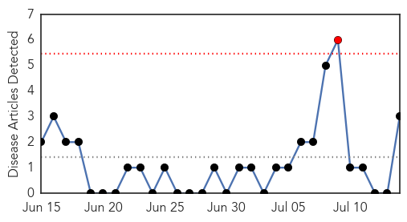

Chikungunya
30-Day Web Trend
1 alerts, 0 warnings

30-Day Twitter Trend
1 alerts, 0 warnings

Article Locations

Article Confidences

Top Articles:
Top Tweets:
-
No tweets found for Jul 14, 2015
West Nile Virus
30-Day Web Trend
4 alerts, 1 warnings

30-Day Twitter Trend
0 alerts, 0 warnings

Article Locations

Article Confidences

Top Articles:
- 0.996
- West Nile Virus Spreads in US; 26 Symptoms, Treatment & Facts
- 0.991
- Drought could worsen West Nile spread
- 0.987
- Crow tests positive for West Nile virus
- 0.924
- Dead bird tests positive for West Nile in Racine County
- 0.923
- Health officials urge Eau Claire County residents to take precau
- 0.892
- Dead Crow Found In London Tests Positive For West Nile Virus
- 0.891
- First West Nile virus case of 2015 reported in North Dakota
- 0.883
- Mosquitoes in Toledo test positive for West Nile
- 0.858
- El Paso prepares for a heavy mosquito season
- 0.750
- West Nile detected at Wildwood Metropark
- 0.585
- Insect-borne disease precaution needed
- 0.524
- Weld County health officials: West Nile virus found in mosquitoes
- 0.511
- Health Department to start weekly mosquito testing
Top Tweets:
-
No tweets found for Jul 14, 2015